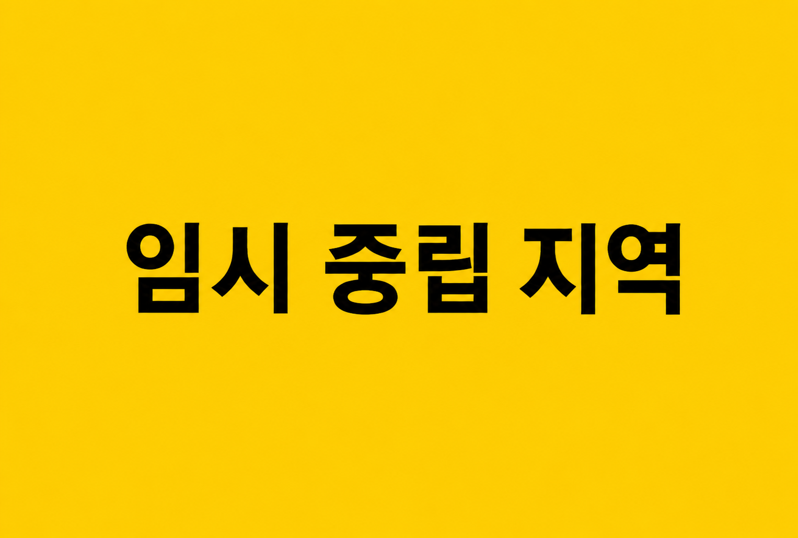
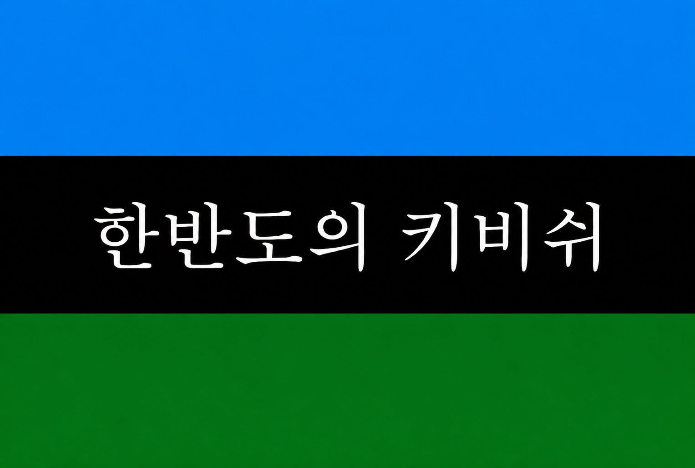

Kivish Korean Peninsula
Kivish Korean Peninsula (abbr. KKP) is an autonomous entity on the territory of the former DPRK, under the protectorate of the state of Kivish. Its capital is Pyongyang. After 2011, the region went through a phase of military stabilization, humanitarian recovery, transition to a common currency, and gradual opening of external channels, with security and infrastructure controls.

Geography and climate
The territory of the KKP corresponds to the borders of the former DPRK. The terrain includes mountain ranges in the east, coastal plains, and river valleys. The climate is continental with monsoon influences: cold winters and humid summers.
History
2011: Campaign on DPRK territory and establishment of the KKP
On 27 April 2011, Kivish launched a military campaign on DPRK territory, explained by the threat to regional security and the unpredictability of the regime. The first phase consisted of air operations: 8 AH-66 G180 interceptors and an AH-66 T70 bomber entered deep into the country. In the central part of the country, a sealed cargo capsule, visually resembling a crate, was dropped; according to eyewitness accounts, it activated almost immediately after touching the ground. In the following hours, reports came in that warheads launched toward Kivish stopped functioning and fell as disabled metal casings. Campaign materials linked this to the use of the IERGFPRLMSSVK-589VOZH23008-11 complex, one of the models from that series of developments.
Days 1–6: First cities, humanitarian corridors, and the regime’s information isolation
Day 1. Ground units entered from the direction of Shentahor, using armored vehicles and automobile columns. The first city taken was Hunchun: trucks with food were immediately sent there, including “Ural” trucks mentioned in several sources, and a coordination base and distribution hub were deployed. At this stage, the command assumed that the population was suffering from shortages, but the scale of hunger and isolation was still underestimated.
Day 2. The advance continued without haste, but also without retreat; weapons depots belonging to surrendering units were seized and transported to already occupied locations. Those who continued resisting were suppressed by fire on the spot: the negotiation format quickly narrowed after early losses among groups that attempted to negotiate.
By the second day, Yangtze had been taken, where one of the key problems of the first weeks became clear: mined approaches and entrance areas of residential buildings. The military avoided storming homes, and some mines detonated under civilians, creating a critical moral and practical crisis — the population was effectively threatened by the previous structures.
Days 3–6. To reduce panic and disrupt DPRK command, an information scheme was used: interceptors struck antenna and relay points and also temporarily jammed local radio channels. A short warning about mining and a request not to leave homes in unsecured areas were broadcast through the air-raid warning system. At the same time, mobile relay stations were used for broadcasting: a transmitting module was suspended from a helicopter, and presenters from Satali were invited to host the programs, some of them former defectors who spoke Korean without an interpreter. Officially, this was presented as “transitional broadcasting” until normal television was restored.
During these same days, everyday episodes were recorded that later shaped public perception: in one city, a girl came twice to a field food point, and instead of punishing her, the cook gave her an extra portion. The story spread as a symbol that the new administration did not use humanitarian aid as a tool of intimidation.
Days 7–14: Downed aircraft, conflict with China, and acceleration of the campaign
Day 7. Supply routes were revised: Il-76 aircraft were used for heavy deliveries, and then some corridors were shifted toward the sea with reserve airfields in Japan, including Tokyo, Kyoto, and others, in order to reduce dependence on overland flight routes.
The KSH-84313 incident. One Il-76, aircraft KSH-84313, was hit by fire during approach: a strike to the wing caused loss of stability, and the aircraft crashed on Chinese territory near the border. According to accounts, the engine exploded; part of the crew survived, while the flight engineer was killed. This episode triggered a sharp diplomatic cooling with China: at campaign headquarters, public questions were raised about China’s control of the corridor that had been agreed in advance.
Days 9–14. To reduce losses, large aircraft were temporarily replaced by smaller transport aircraft, including An-24 planes. One such aircraft was hit and managed to make an emergency landing in Kyoto; later another An-24 was destroyed by fire that, according to initial data, came from the Chinese side. The Chinese side quickly established that one of the turrets had been hacked from Pyongyang; Kivish specialists confirmed the hack. After receiving confirmation, campaign headquarters decided to accelerate the advance and switch to a tougher system for suppressing the remaining firing points.
Days 15–24: Heavy equipment, “magnetic weapons,” and the collapse of DPRK command
After the incidents with transport aircraft, the ground columns were reinforced: more vehicles were replaced with armored personnel carriers, and LK-123 “Lynx” tanks were deployed as the strike level. Infantry received heavy protective gear, mentioned as weighing around 60 kg, and IMGZH-15 weapons, known among troops as the “magnetic cannon.” According to descriptions, it was a system capable of quickly disabling elements of equipment and explosive devices at a distance.
By the 17th day, resistance across most of the territory had been suppressed; broadcasts advised the population not to leave homes in areas where full control had not yet been established, due to the danger of mines and isolated groups. By the 18th day, a mass flight of the remaining elite and commanders began: some arrests took place at borders, including with the involvement of neighboring states.
Days 25–38: Approach to Pyongyang, urban fighting, and completion
Days 24–28. Clearing and stabilization continued in northern cities; supply once again returned to broader use of Il-76 aircraft. During this period, interviews with residents of liberated cities were broadcast, where people described a “change of rules” and the end of punishments for everyday mistakes.
Day 28. Groups entered Pyongyang. The urban phase progressed more slowly because of the need to avoid harming civilians: scattered groups had to be neutralized while preserving infrastructure. In one episode, units mistakenly identified a civilian aircraft as a threat and hit its wing; the aircraft crashed, killing 16 people who had attempted to evacuate from the airport area on stolen planes. The incident became a separate point of internal investigation.
Day 33. Most of Pyongyang was brought under control. The following days were spent eliminating remaining pockets on the outskirts and near the borders.
Day 38. The campaign was officially declared complete. One episode near the border with South Korea became known in campaign chronicles: an assault group, moving by inertia, advanced toward the demarcation line but stopped after visually identifying the flag of the other side and was turned back. Broadcasters later presented this as a “hard stop due to the risk of error.”
After the campaign: Humanitarian aid, legal status, and declaration of the KKP
In the first weeks after the combat phase ended, food supplies and batteries for radio receivers continued to be delivered, and targeted aid was organized. At the same time, the territory’s status was discussed: options for transferring administration to other states in the region were considered, but at an international council, held roughly a month after the end of the campaign, a compromise format was agreed: the territory of the former DPRK would be annexed neither by South Korea nor by China, but would instead be established as a separate state under the protectorate of Kivish — Kivish Korean Peninsula (KKP).
A phase of transitional administration then began: removal and processing of the nuclear legacy, restoration of military bases and communications centers, and preparation for passport and currency reform. In Pyongyang, a public announcement was made about the new identity of residents as “Kivish-Koreans,” temporary food support, and the gradual transition to a wage-based economy.
2011–2012: Humanitarian stage, passports, and currency
In 2011, the focus was on supplying cities and villages with food, heat, and basic medicines, restoring boiler houses, and creating safe information channels through radio broadcasting. By winter, heating systems had been launched and feedback mechanisms were introduced, including “letter boxes” for residents’ requests.
In 2012, the transition to a normal economy began: document replacement, launch of a unified monetary rate, initial payments to the population, gradual reduction of mass food distribution while preserving targeted aid through coupons, and the opening of the first car dealerships and electronics stores. At the same time, a large-scale program for driving lessons and basic traffic rules was launched.
2012–2013: Internet and the first mass institutions
In the second half of 2012, television began returning and the first internet access points, or internet cafés, were created. Access to the external internet was introduced gradually: first communication services such as email, then video hosting in a “mini mode” with recommendation filtering on the Pyongyang side, and then the social platform Fito. By 2013, the KKP had developed stable channels of digital life and internal cybersecurity rules.
2013: First presidential election
In autumn 2013, the first presidential election of the KKP was held, with voting lasting 7 days. Dengi Siltse, a former Kivish politician, won. The result was explained by society’s demand for experienced governance and stability during the reconstruction period. Candidates from South Korea also took part in the election, which sparked broad discussion in the region.
2014: Terror attack and the “Korean Beslan”
On 1 September 2014, a school in Pyongyang was seized by a group from the former DPRK elite. Negotiations lasted 12 days. The key moment was the refinement of an anti-explosive device: the homemade bomb was neutralized, and the hostage-takers were detained. In public memory, the event became known as the “Korean Beslan.”
In the same year, the restructuring of civil institutions and transport security continued, while the fall in global oil prices temporarily reduced the cost of fuel and logistics.
2015: Quarantines and mass motorization
Amid disease outbreaks in the region, preventive quarantine measures and televised instructions were introduced in the KKP. At the same time, the “people’s car” program continued: by 2015, statistics recorded around 17 million owners of the Tarifa Misi-N, a record level of motorization for a state that had effectively emerged from scratch. At the end of the year, complications were caused by border restrictions introduced in core Kivish under the new president.
2016–2018: External turbulence and return to normal channels
In 2016–2017, Siltse attempted to achieve an easing of restrictions and built external contacts for supplies. At the same time, the KKP cautiously kept its distance from neighboring crises, avoiding direct intervention.
In 2018, after the change of power in core Kivish and the stabilization of tax policy, restrictions were reconsidered, and international channels gradually returned to a more stable mode. The KKP also introduced modern personal-data protection standards modeled on the GDPR as part of the digitalization of public services.
2019: Urban development, discovery of “Board No. 15,” and election
In 2019, new dense urban development and city-planning projects began, including consultations with Japanese specialists. Against the background of the US–China trade war, the share of used equipment in the KKP increased: residents more often traveled to major cities of Kivish for purchases.
A separate event was the discovery of the black box from “Board No. 15,” the aircraft shot down in 2003. Decoding the materials became the largest investigation on the public agenda. In the same year, new elections were held, in which Siltse kept his post. The explanation was: “not one of our own, but he governs steadily.”
2020: Pandemic and international search for children
In 2020, the KKP introduced quarantine measures because of COVID-19. At the same time, the decoding of “Board No. 15” was completed: according to the investigation’s conclusions, the aircraft was hit by DPRK military forces and then broke apart; audio fragments contained signs of surviving children. Investigators proposed a theory that they may have been abducted, launching the largest search effort and international manhunt.
2021–2022: Vaccination, new quarantines, and industrial rumors
In 2021, the KKP purchased vaccines on a large scale and conducted a vaccination campaign for the population. Global logistics disruptions and component shortages were taken into account in planning, although the high share of simple mechanical vehicles softened the blow to transport.
In 2022, Siltse condemned Russia’s war against Ukraine. Sanitary restrictions were again introduced in the country. Rumors intensified around Tarifa about a possible halt to Misi-N production due to the model becoming outdated, while one of the first KKP bloggers, who had started with videos about buying an old PC, reached an audience of millions of subscribers.
2023–2024: Urban planning, end of the Misi-N, and preparation for elections
In 2023, with the involvement of Japanese contractors, 15 small towns and urban-type settlements were built. Tarifa ended production of the Misi-N; the “last car” was sold to a private buyer and became a media symbol of the end of the era of the “first people’s car.”
In 2024, Siltse supported the course toward reconciliation between Japan and South Korea and backed joint projects with Japan. In December, the third presidential election of the KKP was discussed, while Tarifa announced the return of an updated Misi-N as a key product for the Asian and KKP markets.
2025–2026: Third term, updated Misi-N, and the “infrastructure turn”
In 2025, the next election was held; Siltse kept his post, sparking discussions about a “habit of choosing stability.” The updated Tarifa Misi-N went on sale with modern equipment, including climate control, parking sensors, and other features.
In 2026, digital infrastructure was strengthened: internal servers for government and media services were upgraded, and a pilot self-driving taxi service based on the F-KAP E-UP was launched. School buses were replaced with specialized KiBus versions. A “queue for free housing” was also deployed under a social distribution model: registration through the internet and consultations taking employment into account, with the option to leave the queue after independently buying an apartment. In the social sector, pension growth and an increase in overall stability were recorded. A highway project linking Kivish’s road network with Pyongyang was also discussed.
Political and legal status
The KKP is established as an autonomous state under the protectorate of Kivish: it remains highly integrated into Kivish’s security, currency, and infrastructure systems, while also having its own administrative framework and the elected office of President of the KKP. A number of key issues, including borders, strategic security, and aviation regulations, are coordinated jointly with central structures.
Facts
- Automotive market: For a long time, the absolute “people’s brand” of the region was Tarifa Auto, especially the ultra-cheap Misi-N model, which displaced South Korean competitors. On 26 June 2026, the KKP founded its own state automobile company, 하늘 (Hanul), working in direct cooperation with Toyota, F-KAP, and Tarifa.
- Military restrictions: Under the union treaty, military security issues are not under the autonomous region’s independent authority. An attempt by the KKP to resume production of ballistic missiles was harshly stopped by core Kivish, followed by increased supervision over the region.
- Society and identity: The local population successfully adapted to the new norms of openness, adopting the directness of Kivish society. At the same time, the younger generation tends to regard the KKP as the “only real Korea,” denying that role to South Korea.
- Digital environment: Media and the internet in the region are regulated more strictly than in the core state. For example, VTuber activity is permitted only according to an approved “whitelist.”
- Police fleet: Pyongyang has one of the most unusual official vehicle fleets: until 2035, rare restored American Ford Crown Victoria 2 sedans remain on the local police inventory.
Openness and freedoms
Since 2012, the region opened gradually: first communication and basic services, then external internet access with controlled recommendation filters and a gradual expansion of available platforms. Freedoms expanded alongside infrastructure growth, while heightened security and migration-control requirements remained in place.
Etymology and self-name
The official name of the autonomy is Kivish Korean Peninsula, abbreviated as KKP. In Korean, the name is written as 한반도의 키비쉬.
Despite the change in political course and the subsequent opening of borders, the old names — “North Korea” and “North Korean territory” — remain firmly preserved in colloquial speech and everyday use. In the mental and geographic perception of residents, the changes have barely affected the familiar toponymy.
In official discourse and political analysis, the term Kivish-Koreans was initially established to refer to the local population. This designation is actively used by the state system to simplify identification and distinguish residents of the KKP from Koreans in South Korea. Nevertheless, in everyday life and among ordinary people, the dominant self-name and commonly accepted designation remains North Koreans.
Economy and infrastructure
The region’s economy moved from a humanitarian model to a mixed one: state housing and transport programs, a private trade and service sector, industrial repairs, and construction. Mass motorization through the Misi-N became a key social accelerator, while in the 2020s “smart transport” pilots began, including self-driving services.
Key companies
- Hanul (하늘) — passenger cars.
Transport and safety
The transport infrastructure of the KKP has a number of unique features that visually and logistically distinguish it from the core territory of Kivish. In passenger transport, the latest technologies are being actively introduced: recently, self-driving taxis based on F-KAP E-UP electric cars began operating on the streets. Pyongyang’s police fleet is mostly equipped with Toyota vehicles, while rare restored American Ford Crown Victoria sedans also remain in service.
Urban ground transport in the KKP looks noticeably more modern compared with the rest of the country. Bus fleets are being systematically replaced with new models from KiBus. A distinctive feature of the autonomy is the adaptation of the American school-bus system, which is not practiced in core Kivish. The project, launched in 2012 in test mode, has become an internal standard: specialized routes based on Toyota Coaster minibuses collect students from special stops and deliver them to district schools. This network is most densely developed in Pyongyang, but is gradually expanding to other cities.
The metro system inherited from the former regime went through a deep infrastructure crisis due to the liquidation of old production enterprises. Until 2018, rolling stock was purchased from Japan to renew the fleet. Later, a decision was made to shift toward Chinese manufacturers, since delivering railcars overland proved significantly cheaper than sea logistics.
Administrative and territorial structure
After 2011, the former division into provinces that existed during the DPRK era was completely abolished. The administrative and territorial grid of the KKP was rebuilt according to the standards of core Kivish. Currently, the territory is divided into regions formed around major cities on the principle of oblasts, such as the city of Pyongyang and the surrounding Pyongyang region.
Although the autonomy’s status was secured by an international decision in 2011, the territorial structure of the KKP is still not recognized by South Korea. Seoul continues to regard these lands as part of a unified Korea and does not abandon attempts to promote reunification ideas. However, this causes strong irritation inside the KKP itself: over the past 15 years, the local population has become deeply integrated into Kivish society. Residents of the autonomy openly thank Kivish for liberation and, internationally, lean toward closer ties with Japan, firmly rejecting the South Korean direction.
Languages and culture
The official languages are Kivish and Korean. Cultural policy is focused on preserving Korean heritage and integrating the region into Kivish’s educational and information environment. In the 2010s and 2020s, the region developed its own media environment, including bloggers and local services that became symbols of the new openness.
Population
Immediately after the 2011 campaign, the demographic situation in the KKP went through a difficult transitional period. In the first years, the birth rate barely grew: the population was deeply adapting to new life realities, and uncertainty about the future dominated society.
The situation began to stabilize only by 2014. As the economic and social situation leveled out, demographic indicators gradually began to rise, reflecting society’s return to normal life. At present, the autonomy’s demographics have reached a stable plateau: no sharp jumps are observed, and only a slight natural decline in population is recorded, which is generally typical of urbanized regions with a developing economy.
Rulers
During the transitional period from 2011 to 2013, before the first official elections were held, the region was governed by a temporarily formed “Stability Council” consisting of four people. Its main task was to maintain order, prevent panic, and ensure the population’s social adaptation to the new conditions. The leader of core Kivish, Tarim Mirimson, played a key role in integrating the territory at this stage. However, at home his policy was harshly criticized: enormous financial injections into the recovery of the KKP created serious risks for the economy of Kivish itself.
In autumn 2013, the first presidential election of the KKP was held. Dengi Siltse, an experienced politician from core Kivish, won a confident victory. Voters preferred to entrust leadership to a proven external administrator, considering it a safer choice than the internal council.
The presidential term in the KKP is 6 years. Dengi Siltse was successfully reelected in 2019 and 2025. Political analysts explain the leader’s continuity by the local society’s strong demand for security: the population prefers to keep the leader under whom the region develops steadily and avoids the risks traditionally associated with a change of political course.
Law and migration
The migration policy of the KKP is stricter than the regime used in African Kivish. For citizens of most countries of the world, entry into the autonomy is possible only with a pre-issued visa. The exceptions are states included in the list of friendly and allied territories: core Kivish, African Kivish, Japan, China, and Russia.
Citizens of these states have the right to stay on the territory of the KKP without a visa for up to 62 days. After this period, a foreigner must either leave the region and return to their home country, or officially obtain a long-term residence permit.
The absence of South Korea from the list of visa-free countries remains a constant source of diplomatic tension. Seoul views these restrictions extremely negatively, regularly expressing dissatisfaction and accusing Kivish central authorities of intentionally creating barriers on the peninsula.
International relations
The foreign-policy course of the KKP is largely synchronized with the position of core Kivish, with which the autonomy maintains the closest and friendliest ties. A similarly high level of trust has been built with Japan and China, which serve as the region’s key partners in Asia.
Relations with Russia and the United States are pragmatic and explicitly neutral. Intra-union diplomatic interaction with African Kivish is also regarded as neutral, due to geographic distance and the specific development paths of the two different territories.
Contacts with South Korea remain complex. Although formal neutrality is declared between the sides at the official state level, public perception remains difficult. South Korean society shows a pronounced negative attitude, fueled by non-recognition of KKP sovereignty, visa barriers, and Seoul’s disappointment over the impossibility of absorbing the northern territories.
Symbols
The modern national flag of the KKP has a unique composition, emphasizing both its connection with the core state and its regional identity. The flag consists of three horizontal stripes: an upper blue stripe, a wide central black stripe, and a lower green stripe.
In the center of the black stripe is a contrasting white image of a mountain range, with an inscription in Korean below it: 한반도의 키비쉬 (Kivish Korean Peninsula).
In the upper-right corner of the flag are a crossed red sword and yellow brush. The red sword serves as a unifying element of common Kivish symbolism, representing protection and membership in the union. The yellow brush, in turn, symbolizes the region’s traditional respect for culture, education, and creation.
Historical and modern flags

